1. Prérequis
- Une machine Debian 13 ou Ubuntu 24.04 LTS
1.1 Mise à jour du système
# Met à jour la liste des paquets et installe les versions les plus récentes
apt update && apt upgrade -y1.2 Installation des services Web et Base de données
# Installe le serveur HTTP Apache, le moteur PHP-FPM et MariaDB
apt install apache2 php8.4-fpm mariadb-server1.3 Installation des extensions PHP indispensables
# Installe les modules PHP spécifiques nécessaires au fonctionnement de GLPI
apt install php8.4-{curl,gd,intl,mysql,zip,bcmath,mbstring,xml,bz2}
# Installe l'extension pour permettre la liaison avec un annuaire LDAP
apt install php8.4-ldap2. Configuration de la base de données MariaDB
2.1 Sécurisation du service
# Lance l'utilitaire de sécurisation (mot de passe root, accès distants, etc.)
mariadb-secure-installation2.2 Création de la base de données et de l'utilisateur
Nous créons ici l'espace de stockage et les identifiants que GLPI utilisera pour se connecter à MariaDB.
# Connexion à l'interface de commande MariaDB
mysql -u root -pCommandes SQL à exécuter :
-- Crée la base de données nommée it_doc_glpi
CREATE DATABASE it_doc_glpi;
-- Crée l'utilisateur 'glpi' avec son mot de passe et lui donne tous les droits sur la base
-- Ne pas mettre un mot de passe facile pour une base de données en prod
GRANT ALL PRIVILEGES ON it_doc_glpi.* TO glpi@localhost IDENTIFIED BY "motdepasse";
-- Applique les nouveaux privilèges et quitte
FLUSH PRIVILEGES;
EXIT;3. Téléchargement et installation de GLPI
3.1 Récupération des fichiers
# Se place dans le répertoire temporaire et télécharge l'archive officielle
cd /tmp
wget https://github.com/glpi-project/glpi/releases/download/11.0.4/glpi-11.0.4.tgz3.2 Extraction et permissions
# Extrait le contenu dans le répertoire du serveur web
tar -xvzf glpi-11.0.4.tgz -C /var/www/
# Attribue la propriété du dossier au serveur web (www-data) de façon récursive
chown www-data:www-data /var/www/glpi -R4. Sécurisation de l'arborescence des fichiers
Conformément aux bonnes pratiques, nous sortons les données sensibles de la racine publique du site web.
4.1 Dossiers de configuration et de données
# Crée et déplace la configuration vers /etc/glpi
mkdir /etc/glpi
chown www-data /etc/glpi/
mv /var/www/glpi/config /etc/glpi
# Crée et déplace les fichiers déposés (attachments) vers /var/lib/glpi
mkdir /var/lib/glpi
chown www-data /var/lib/glpi/
mv /var/www/glpi/files /var/lib/glpi4.2 Dossier de fichiers de logs
# Crée le dossier destiné à stocker les journaux (logs) de l'application
mkdir /var/log/glpi
chown www-data /var/log/glpi5. Configuration d'Apache et redirection des chemins
5.1 Création du VirtualHost
# Crée le fichier de configuration pour le site
nano /etc/apache2/sites-available/glpi.confContenu à intégrer :
<VirtualHost *:80>
ServerName 192.168.1.36
DocumentRoot /var/www/glpi/public
<Directory /var/www/glpi/public>
Require all granted
RewriteEngine On
RewriteCond %{HTTP:Authorization} ^(.+)$
RewriteRule .* - [E=HTTP_AUTHORIZATION:%{HTTP:Authorization}]
RewriteCond %{REQUEST_FILENAME} !-f
RewriteRule ^(.*)$ index.php [QSA,L]
</Directory>
<FilesMatch \.php$>
SetHandler "proxy:unix:/run/php/php8.4-fpm.sock|fcgi://localhost/"
</FilesMatch>
</VirtualHost>5.2 Déclaration des nouveaux répertoires dans GLPI
Il faut indiquer à GLPI où vous avez déplacé ses dossiers de configuration et de stockage.
# Création du fichier de liaison amont
nano /var/www/glpi/inc/downstream.php<?php
define('GLPI_CONFIG_DIR', '/etc/glpi/');
if (file_exists(GLPI_CONFIG_DIR . '/local_define.php')) {
require_once GLPI_CONFIG_DIR . '/local_define.php';
}# Création du fichier de définition locale
nano /etc/glpi/local_define.php<?php
define('GLPI_VAR_DIR', '/var/lib/glpi/files');
define('GLPI_LOG_DIR', '/var/log/glpi');6. Liaison PHP8.4-FPM et sécurisation
6.1 Activation des modules
# Active les modules de proxy et la configuration PHP-FPM dans Apache
a2enmod rewrite
a2enmod proxy_fcgi setenvif
a2enconf php8.4-fpm
a2ensite glpi.conf
systemctl reload apache26.2 Sécurisation des cookies PHP
# Édite le fichier de configuration PHP pour renforcer la sécurité des sessions
nano /etc/php/8.4/fpm/php.iniModifiez les valeurs suivantes dans le fichier :
session.cookie_httponly = onsession.cookie_samesite = Lax
6.3 Application des changements
# Redémarre les services pour valider toute la configuration
systemctl restart php8.4-fpm.service
systemctl restart apache2GLPI est maintenant installé, vous pouvez y accéder via un navigateur internet avec l'IP de la VM.
7. Configuration interface web GLPI
Une fois l'IP renseignée dans le navigateur, vous arriverez sur cette page :
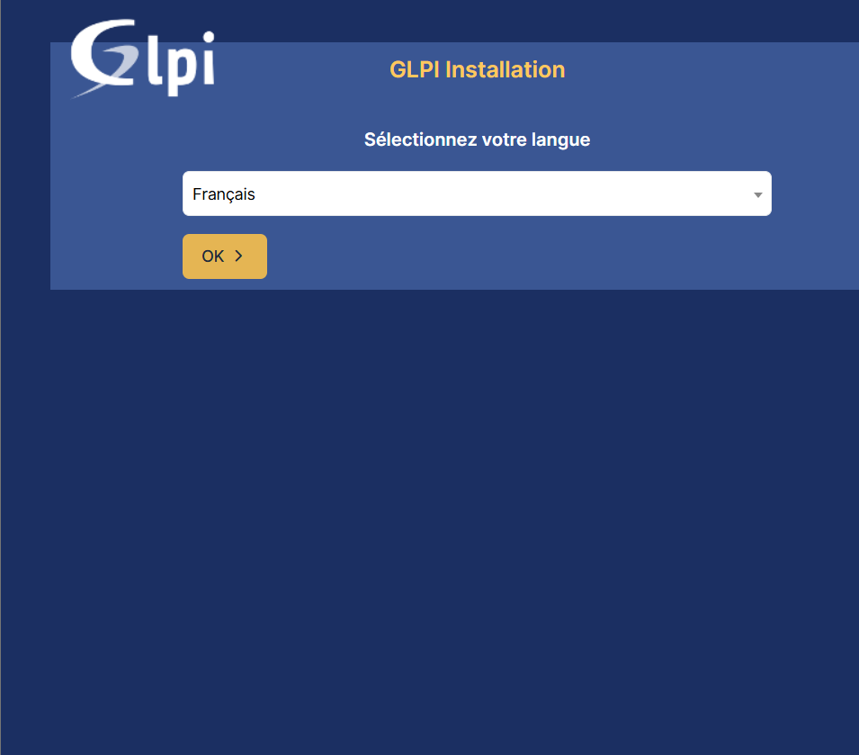
Cliquez sur OK
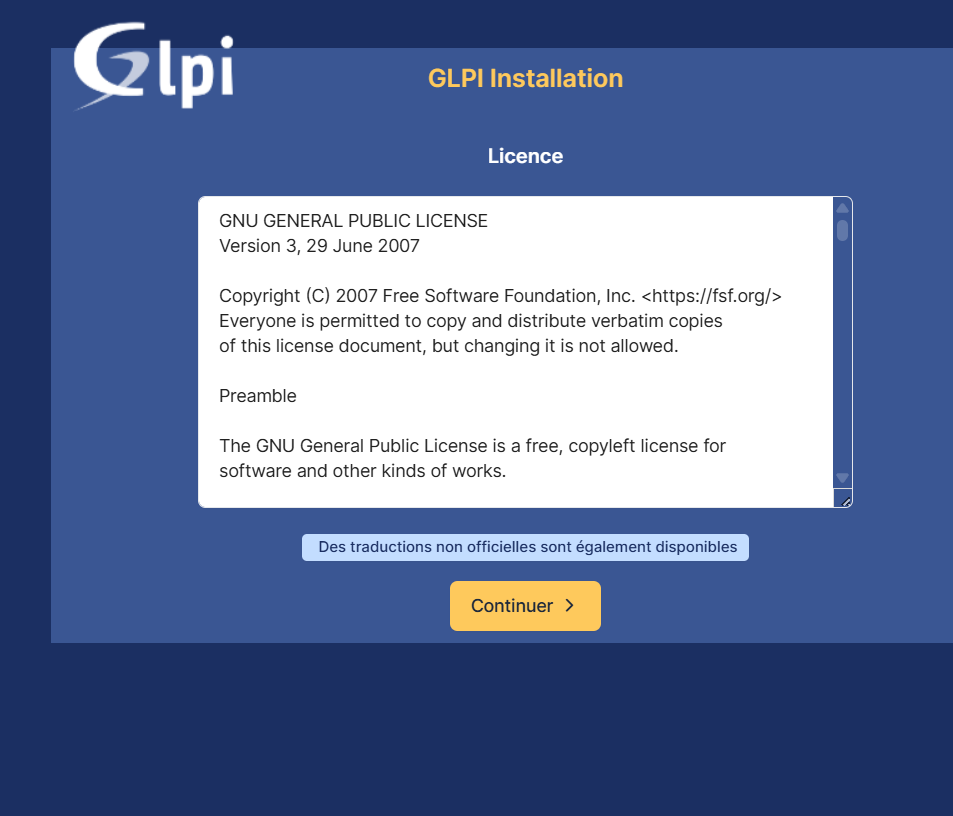
Cliquez sur Continuer pour accepter les termes de la licence GLPI
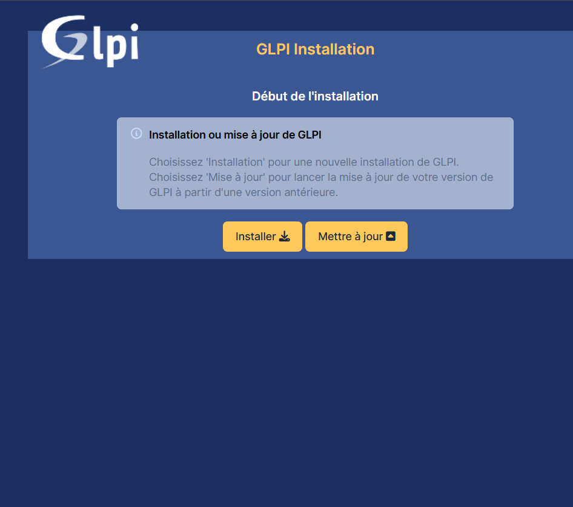
Cliquez sur Installer
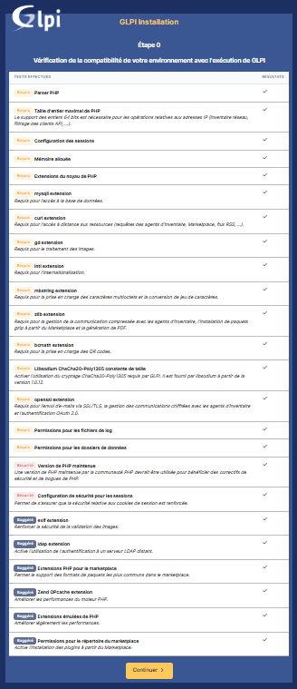
Comme on peut le constater, tous les modules PHP ont bien été installés. Cliquez sur Continuer
Nous allons renseigner l'emplacement de notre base de données et un utilisateur pour se connecter.
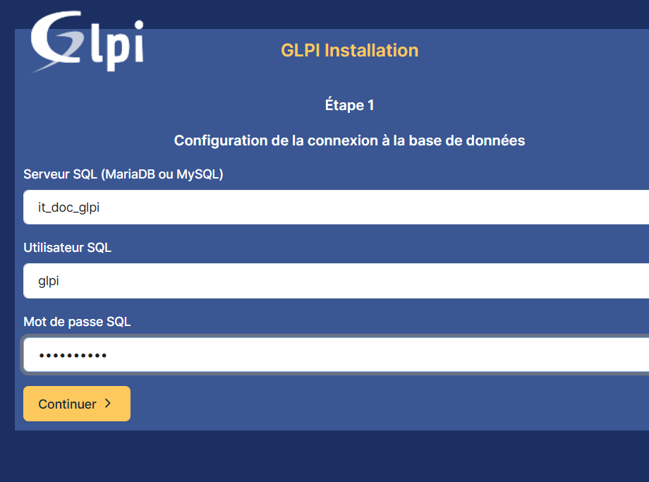
Dans ce cas, nous avons créé notre base de données sur la même machine, en conséquence nous allons écrire localhost puis l'utilisateur que nous avons créé précédemment avec son mot de passe.
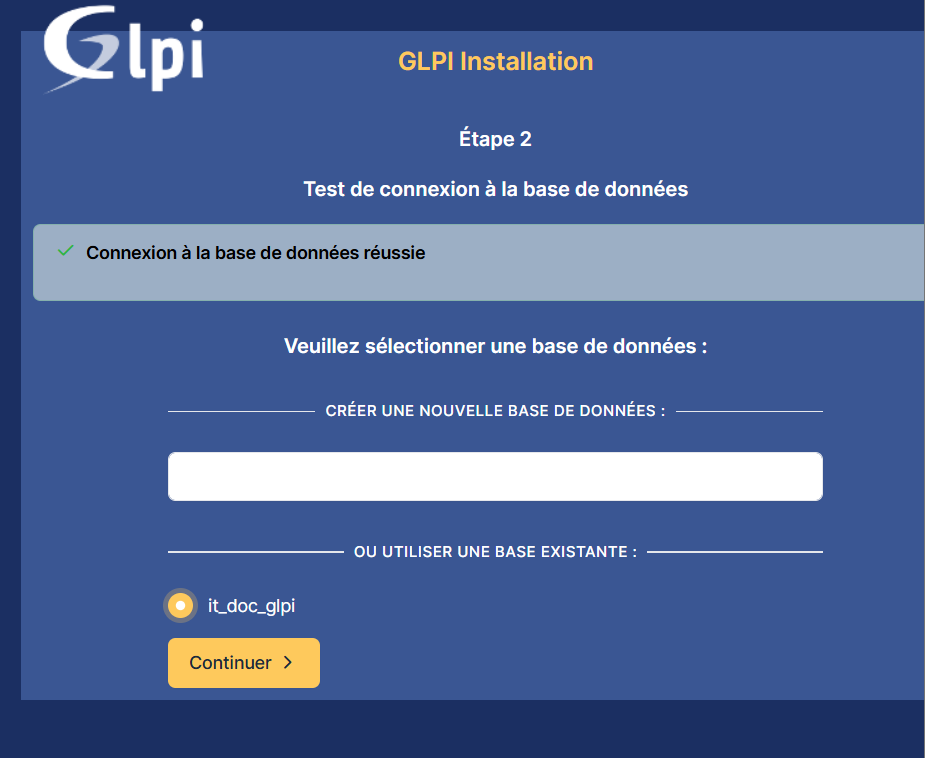
La connexion à la base de données est bien établie. Sélectionnez la BDD it_doc_glpi que nous avons créée précédemment.
Patientez pendant que GLPI initialise la base de données.
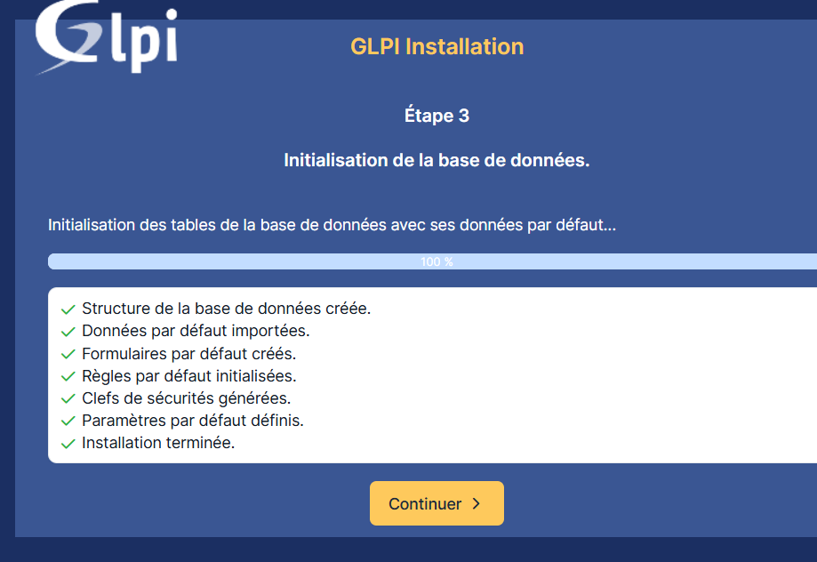
La base de données est maintenant initialisée. Cliquez sur Continuer
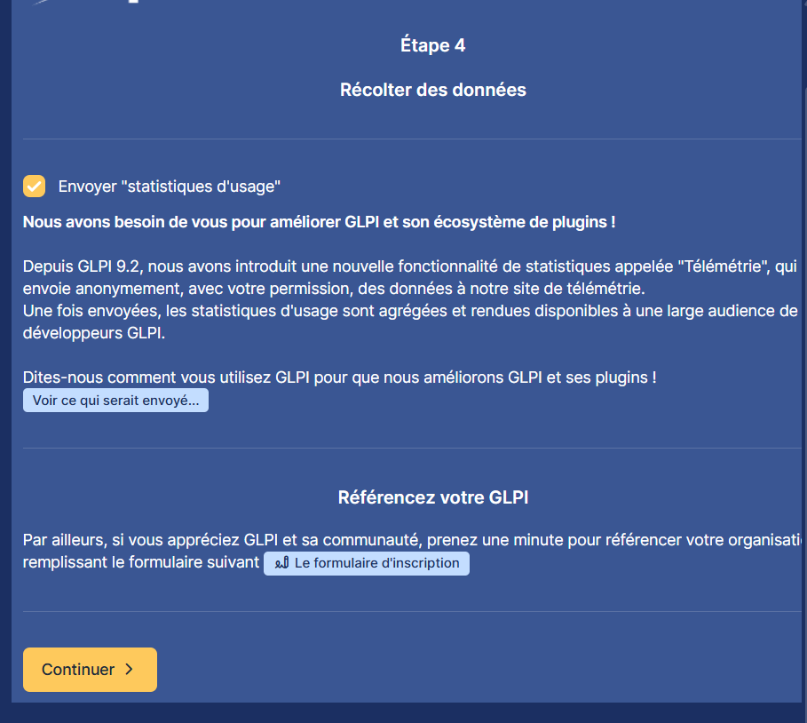
GLPI vous propose un service de support. Cliquez sur Continuer
Nous allons maintenant utiliser GLPI.
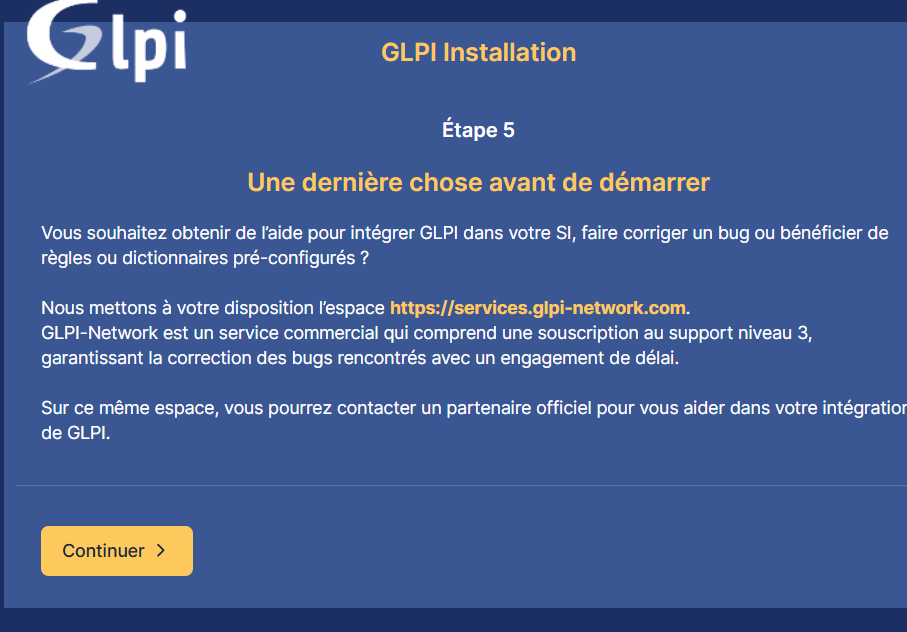
Connectez-vous avec le compte super admin :
- Identifiant : glpi
- Mot de passe : glpi
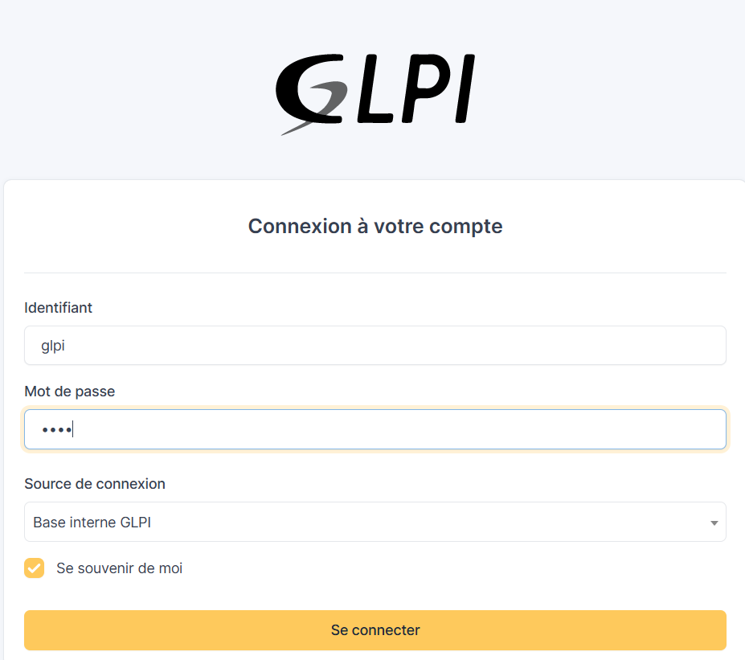
Nous sommes maintenant dans GLPI qui est bien fonctionnel !
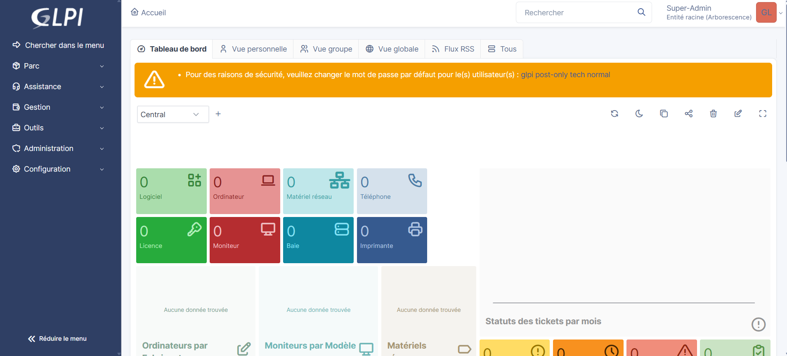
Comme conseillé, changez le mot de passe d'utilisateur pour ne plus avoir ce message d'alerte.
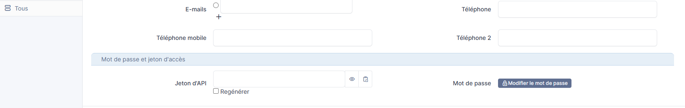
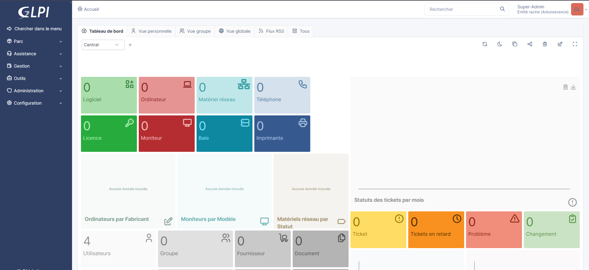